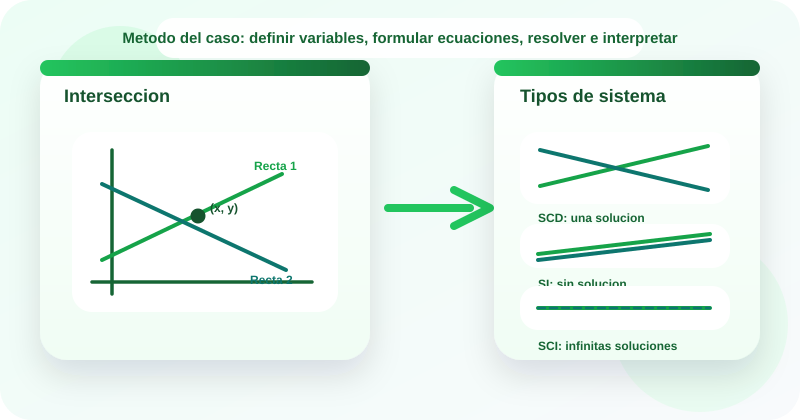

Casos guiados
Estudio de casos
Sistemas de ecuaciones lineales
📐 Un sistema de ecuaciones lineales permite modelar situaciones donde dos o mas restricciones deben cumplirse al mismo tiempo y la solucion surge al encontrar los valores que satisfacen todas las ecuaciones.
En tecnologia se usan para analizar costos de planes y licencias, distribucion de recursos, mezcla de tareas por rol y balance de cargas entre servicios. Este OVA se enfoca en formular sistemas de dos variables, elegir un metodo de solucion e interpretar si el sistema tiene una solucion, infinitas soluciones o ninguna solucion.
El recurso usa la metodologia de estudio de casos para definir variables, construir ecuaciones, resolver el sistema y justificar el significado de la solucion dentro del problema.

Objetivos de aprendizaje
- 🧠 Reconocer cuando una situacion del contexto puede modelarse con un sistema lineal de dos variables.
- 🧩 Formular ecuaciones lineales a partir de datos, restricciones y relaciones entre cantidades.
- 🛠️ Resolver sistemas de ecuaciones lineales mediante grafica, sustitucion y reduccion.
- 📊 Distinguir sistemas compatibles determinados, compatibles indeterminados e incompatibles.
- ✅ Interpretar la solucion obtenida y explicar si el resultado es viable dentro del caso estudiado.
Contenido tematico
De las restricciones del caso a la solucion del sistema
El eje del recurso es leer el contexto, definir variables, construir ecuaciones y decidir el metodo de resolucion mas conveniente.
Variable
Representa una cantidad desconocida del problema.
x, y
Debe definirse con claridad antes de formular ecuaciones.
Ecuacion lineal
Expresa una relacion de primer grado entre las variables.
ax + by = c
Cada ecuacion representa una restriccion del caso.
Sistema 2 x 2
Reune dos ecuaciones lineales con dos variables.
a_1x + b_1y = c_1
a_2x + b_2y = c_2
La solucion debe satisfacer ambas ecuaciones al mismo tiempo.
Compatible determinado
Tiene una unica solucion.
SCD
En grafica, las rectas se cortan en un solo punto.
Compatible indeterminado o incompatible
Puede tener infinitas soluciones o no tener ninguna.
SCI / SI
Depende de si las rectas coinciden o son paralelas.
Actividades de practica
Refuerza la formulacion, clasificacion y resolucion de sistemas lineales mediante ejercicios interactivos y laboratorios guiados.
Actividad 1. Clasifica cada tarjeta
Arrastra cada elemento hacia la categoria correcta.
Si estas en celular, toca una tarjeta y luego la categoria correspondiente.
2x + y = 11
x + y = 10
Sustitucion
Reduccion
Compatible determinado
Incompatible
Grafica
Compatible indeterminado
Sistema o ecuacion
Metodo
Tipo de sistema
Actividad 2. Relaciona cada caso con el metodo mas conveniente
Arrastra cada situacion hacia la estrategia que mejor se ajusta.
Piensa en la estructura del sistema antes de elegir el metodo.
Se quiere interpretar el punto donde se cruzan dos rectas.
Una ecuacion ya permite despejar x o y con facilidad.
Conviene sumar ecuaciones para eliminar una variable.
Se necesita decidir si las rectas son coincidentes o paralelas.
La lectura visual del cruce ayuda a validar la solucion.
El sistema tiene una variable expresada en funcion de la otra.
Los coeficientes permiten anular y al sumar las ecuaciones.
El determinante es cero y hay que interpretar el tipo de sistema.
Grafica
Sustitucion
Reduccion
Clasificacion
Actividad 3. Ordena la metodologia del caso
Asigna del 1 al 5 el orden correcto para resolver un sistema lineal en contexto.
Actividad 4. Completa los resultados
Selecciona la respuesta correcta en cada ejercicio.
| Ejercicio | Respuesta |
|---|---|
| Si x + y = 10 y x - y = 2, entonces la solucion es | |
| Si 2x + y = 11 y 3x - y = 4, entonces x = | |
| Si x + y = 4 y 2x + 2y = 8, el sistema es | |
| El determinante del sistema x + 2y = 9 y 3x - y = 8 es |
Actividad 5. Laboratorio de sistemas lineales
Experimenta con coeficientes y analiza el tipo de sistema para interpretar sus soluciones.
Laboratorio 1. Resolver un sistema 2 x 2
El laboratorio analiza el sistema: ax + by = c y dx + ey = f.
Listo para analizar
Laboratorio 2. Explorador de tipos de sistema
Listo para analizar
Evaluacion de comprension
Responde el cuestionario para verificar tu dominio sobre sistemas de ecuaciones lineales.
Recursos de apoyo
Antes de resolver
Define con precision que representa cada variable y verifica las unidades del problema.
Durante el analisis
Comprueba si conviene despejar, eliminar o interpretar geometricamente el sistema.
Despues del calculo
Sustituye la solucion en ambas ecuaciones y explica si el resultado tiene sentido en el caso.
Hoja rapida de estudio
- Un sistema 2 x 2 combina dos ecuaciones con dos variables.
- Grafica, sustitucion y reduccion son metodos de solucion habituales.
- Si el determinante es distinto de cero, existe una solucion unica.
- SCI significa infinitas soluciones y SI significa ausencia de solucion.
- La solucion algebraica debe traducirse al lenguaje del problema.
Bibliografia
Larson, R. Algebra and Trigonometry. Cengage Learning.
Lay, D. C., Lay, S. R., y McDonald, J. J. Linear Algebra and Its Applications. Pearson.
Sullivan, M. Algebra and Trigonometry. Pearson.
Baldor, A. Algebra. Grupo Patria Cultural.